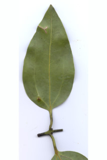
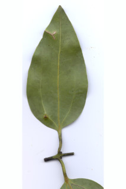

Buttressed trees, up to 25 m tall.
ಆನಿಕೆಗಳುಳ್ಳ 25 ಮೀ.ವರೆವಿಗೆ ಬೆಳೆಯುವ ಮರಗಳು.
വപ്രമൂലമുളള 25 മീറ്റര് വരെ ഉയരമുളള മരങ്ങള്.
தாங்கு வேர்களுடைய (பட்ரஸ்டு) மரங்கள், 25 மீ. உயரம் வரை வளரக்கூடியது
Bark grey, smooth with lenticels, odourless; blaze light brown to reddish.
ತೊಗಟೆ ಬೂದು ಬಣ್ಣ ಹೊಂದಿದ್ದು ನಯವಾಗಿರುತ್ತದೆ ಮತ್ತು ವಾಯುವಿನಿಮಯ ಬೆಂಡು ರಂಧ್ರ ಸಮೇತವಿರುತ್ತದೆ ಮತ್ತು ವಾಸನೆ ಹೊಂದಿರುವುದಿಲ್ಲ;ಕಚ್ಚು ಮಾಡಿದ ಜಾಗ ಕಂದು ಬಣ್ಣದಿಂದ ಕೆಂಪು ಬಣ್ಣದವರೆಗಿರುತ್ತದೆ.
ശ്വസനരന്ധ്രങ്ങളുളള മണമൊന്നുമില്ലാത്ത, ചാരനിറത്തിലുളള മിനുസമായ പുറംതൊലി; വെട്ടുപാടിന് ഇളംതവിട്ട് മുതല് ചുവപ്പുവരെ നിറമാകാം.
மரத்தின் பட்டை சாம்பல் நிறமானது, வழுவழுப்பானது, லெண்டிசெல் (பட்டைத்துளைகள்) உடையது, வாசனையற்றது; உள்பட்டை வெளிறிய ப்ரவுன் முதல் சிவப்பு நிறமானது.
Branchlets terete, glabrous.
ಕಿರುಕೊಂಬೆಗಳು ದುಂಡಾಗಿದ್ದು ರೋಮರಹಿತವಾಗಿರುತ್ತವೆ.
അരോമിലമായ, ഉരുണ്ട ഉപശാഖകള്.
சிறிய நுனிக்கிளைகள் குறுக்குவெட்டுத் தோற்றத்தில் வளையமானது, உரோமங்களற்றது.
Leaves simple, opposite to subopposite; petiole ca. 2.5 cm, terete, glabrous; lamina 6-12 x 2.5-6 cm (in young trees lamina up to 20 x 12 cm), ovate to elliptic-ovate, glabrous, apex obtuse, base rounded to attenuate, subcoriaceous, glossy above, pale beneath; basally trinerved, laterals not reaching the apex, midrib raised; tertiary_nerves broadly horizontally_percurrent; higher order nerves reticulate.
ಎಲೆಗಳು ಸರಳವಾಗಿದ್ದು,ಅಭಿಮುಖದಿಂದ ಉಪಅಭಿಮುಖವರೆಗಿನ ಮಾದರಿಯಲ್ಲಿ ಜೋಡನೆಗೊಂಡಿರುತ್ತವೆ;ತೊಟ್ಟುಗಳು ಅಂದಾಜು 2.5 ಸೆಂ.ಮೀ. ವರೆಗಿನ ಉದ್ದವಿದ್ದು,ರೋಮರಹಿತವಾಗಿರುತ್ತವೆ;ಪತ್ರಗಳು 6-12 x 2.5-6 ಸೆಂ.ಮೀ( ಎಳೆಯ ಮರಗಳಲ್ಲಿ 20X12ಸೆಂ.ಮೀ.) ಗಾತ್ರ ಹೊಂದಿದ್ದು ಅಂಡದಿಂದ ಅಂಡವೃತ್ತದವರೆಗಿನ ಆಕಾರದಲ್ಲಿರುತ್ತವೆ ಮತ್ತು ರೋಮರಹಿತವಾಗಿರುತ್ತವೆ. ಪತ್ರದ ತುದಿ ಚೂಪಲ್ಲದ ಮಾದರಿಯಲ್ಲಿರುತ್ತದೆ;ಬುಡ ದುಂಡಾದುದರಿಂದ ಒಳಬಾಗಿದ ರೀತಿಯಲ್ಲಿರುತ್ತದೆ;ಪತ್ರಗಳ ಮೇಲ್ಮೈ ಉಪ-ತೊಗಲನ್ನೊಲುವ ಮಾದರಿಯಲ್ಲಿದ್ದು ಪತ್ರದ ಮೇಲ್ಭಾಗ ಹೊಳಪನ್ನು ಹೊಂದಿದ್ದು ತಳಭಾಗ ಮಸುಕಾಗಿರುತ್ತದೆ;ಪತ್ರಗಳು 3 ಆಧಾರ ನಾಳಗಳನ್ನು ಹೊಂದಿದ್ದು ಪಾರ್ಶ್ವ ನಾಳಗಳು ಅಗ್ರವನ್ನು ತಲುಪುವುದಿಲ್ಲ;ಮಧ್ಯ ನಾಳ ಮೇಲೆದ್ದಿರುತ್ತದೆ;ಮೂರನೇ ದರ್ಜೆಯ ನಾಳಗಳು ವಿಶಾಲವಾಗಿದ್ದು, ಲಂಬ ರೇಖೆಗೆ ಸಮಕೋನದಲ್ಲಿರುತ್ತವೆ ಹಾಗೂ ಎಲೆದಿಂಡಿಗೆ ಅಡ್ಡವಾಗಿ ಕೂಡುವ ರೀತಿಯವು. ಉನ್ನತ ದರ್ಜೆಯ ನಾಳಗಳು ಜಾಲಬಂಧ ನಾಳ ವಿನ್ಯಾಸದಲ್ಲಿರುತ್ತವೆ.
ലഘുവായ ഇലകള്, സമ്മുഖമോ ഉപസമ്മുഖമോ ആണ്; അരോമിലമായ ഉരുണ്ട ഇലഞെട്ടിന് ഏതാണ്ട് 25 സെ.മീ നീളം; പത്രഫലകത്തിന് 6 സെ.മീ തൊട്ട് 12 സെ.മീ വരെ നീളവും 2.5 സെ.മീ തൊട്ട് 6 സെ.മീ വരെ വീതിയും (ഇളംമരങ്ങളില് പത്രഫലകം 20 സെ.മീ വരെ നീളമുളളതും 12 സെ.മീ വരെ വീതിയുളളതുമായിരിക്കും), ആകൃതി അണ്ഡാകാരം തൊട്ട് ദീര്ഘവൃത്തീയ-അണ്ഡാകാരംവരെയാകാം, അരോമിലം, പത്രാഗ്രം ഉപകോണാകാരത്തിലാണ്, പത്രാധാരം വൃത്താകാരം തൊട്ട് നേര്ത്തവസാനിക്കുന്നതു വരെയാകാം, ഉപചര്മ്മില പ്രകൃതം, മുകളില് തിളങ്ങുന്നതാണ്, വിളറിയ കീഴ്ഭാഗം; ആധാരത്തില് 3 ഞരമ്പുകളുണ്ട്, അഗ്രത്തിലെത്താത്ത പാര്ശ്വസിരകള്, ഉയര്ന്നു നില്ക്കുന്ന മുഖ്യസിര; വീതിയേറിയ തിരശ്ചീന പെര്കറന്റ് വിധത്തിലുളള ത്രിതീയ ഞരമ്പുകള്; മറ്റ് ചെറുസിരകള് ജാലിതമാണ്.
இலைகள் தனித்தவை, எதிரடுக்காமானவை முதல் கிட்டதட்ட அல்லது கிட்டதட்ட எதிரடுக்கம் போன்றவை; இலைக்காம்பு 2.5 செ.மீ., குறுக்குவெட்டுத் தோற்றத்தில் வளையமானது, உரோமங்களற்றது; இலை அலகு 6-12 X 2.5-6 செ.மீ., (இளம் மரத்தில் இலை அலகு 20 X 12 செ.மீ. வரையானது) முட்டை முதல் நீள்வட்டம்-முட்டை வடிவானது, அலகின் கீழ்பரப்பு உரோமங்களற்றது மற்றும் வெளிறிய நிறமானது, மேற்பரப்பு பளபளப்பானது, 3-நரம்புகளை தளத்திலே உடையது, பக்கநரம்புகள் இரண்டும் அலகின் நுனி வரை செல்லாதது; மையநரம்பு மேற்பரப்பில் அலகின் பரப்பைவிட உயர்ந்தது; மூன்றாம் நிலை நரம்புகள் அகன்ற மற்றும் விளிம்பை நோக்கிய கிடைமட்டத்தில் இணையான பெர்க்கரண்ட்; மற்ற சிறிய நரம்புகள் வலைப்பின்னல் போன்றது.
Inflorescence panicle, lax, up to 15 cm long, slender; pedicels
ಪುಷ್ಪಮಂಜರಿ ಪುನರಾವೃತ್ತಿಯಾಗಿ ಕವಲೊಡೆಯುವ ಮಾದರಿಯಲ್ಲಿದ್ದು ತೆಳುವಾಗಿರುತ್ತದೆ ಮತ್ತು ಸಡಿಲ ರೀತಿಯಲ್ಲಿರುತ್ತವೆ ಹಾಗೂ 15 ಸೆಂ ಮೀ. ವರೆಗಿನ ದ್ದ ಹೊಂದಿರುತ್ತದೆ.
പൂങ്കുല 15 സെ.മീ വരെ നീളമുളള നേര്ത്ത അയഞ്ഞ പാനിക്കിള് ആണ്.
மஞ்சரி பேனிக்கிள் வரை, நெருக்கமற்றது, 15 செ.மீ. வரை நீளமானது, மெல்லிய மலர்காம்புடையது.
Berry, ellipsoid, 1.8 cm long; fruiting_calyx cupular, 0.6 cm long, without distinct lobes; seed 1.
ಬೆರ್ರಿಗಳು ಅಂಡವೃತ್ತಾಕಾರದಲ್ಲಿದ್ದು 1.8 ಸೆಂ.ಮೀ. ಉದ್ದವನ್ನು ಹೊಂದಿರುತ್ತವೆ; ಕಾಯಿಗಳ ಪುಷ್ಪಪಾತ್ರೆ ಬಟ್ಟಲಿನ ಆಕಾರದಲ್ಲಿರುತ್ತದೆ ಮತ್ತು 0.6 ಸೆಂಮೀ.ಉದ್ದ ಹೊಂದಿದ್ದು ನಿರ್ದಿಷ್ಟವಾದ ದಳಗಳನ್ನು ಹೊಂದಿರುವುದಿಲ್ಲ ;ಬೀಜ 1.
ഒറ്റ വിത്തുമാത്രമുള്ള കായ വ്യക്തമായി കര്ണ്ണിതമല്ലാത്ത, 0.6 . സെ. മി. വരെ നീളമുള്ള ഫല ബാഹ്യദള കപ്പുള്ള, 1.8 സെ. മി. നീളമുള്ള, ദീര്ഘഗോളാകാര ബെറിയാണ്.
முழுச்சதைகனி (பெர்ரி), நீள்வட்ட வடிவானது, 1.8 செ.மீ. நீளமானது; ப்பீரியான்ந்த் கனியில் நிரந்தரமானது, கோப்பை போன்றது, 0.6 செ.மீ. நீளமானது, அதன் இதழ்கள் தெளிவற்றது; விதை ஒன்றுடையது.


 
